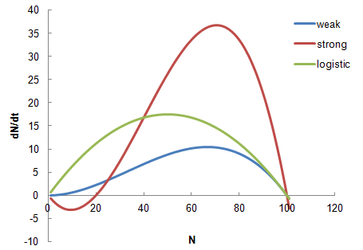
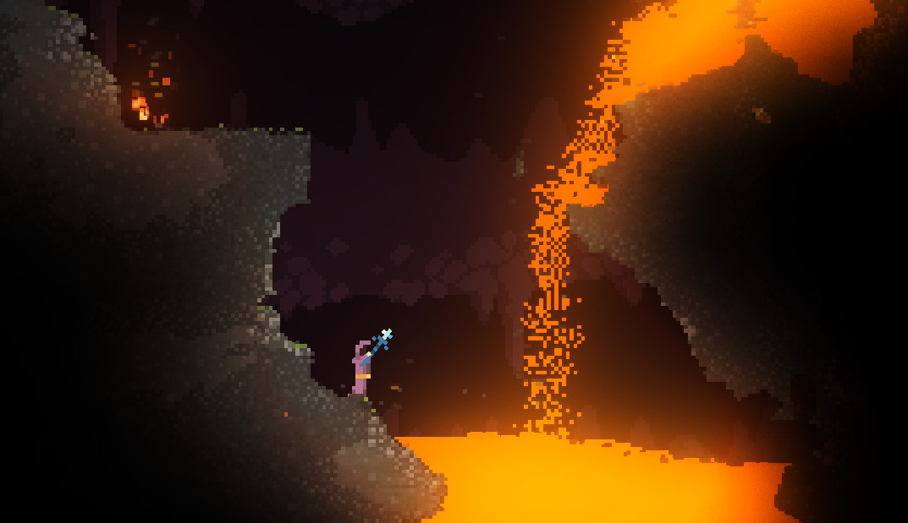
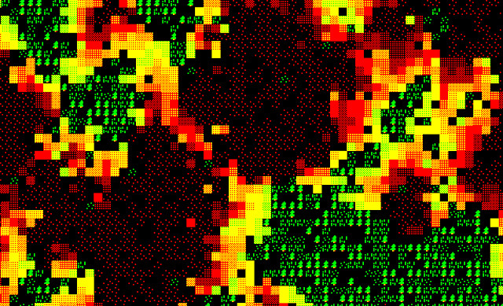
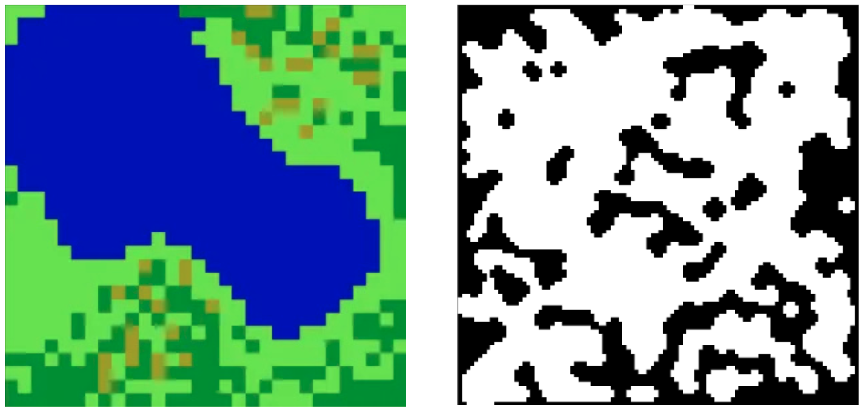
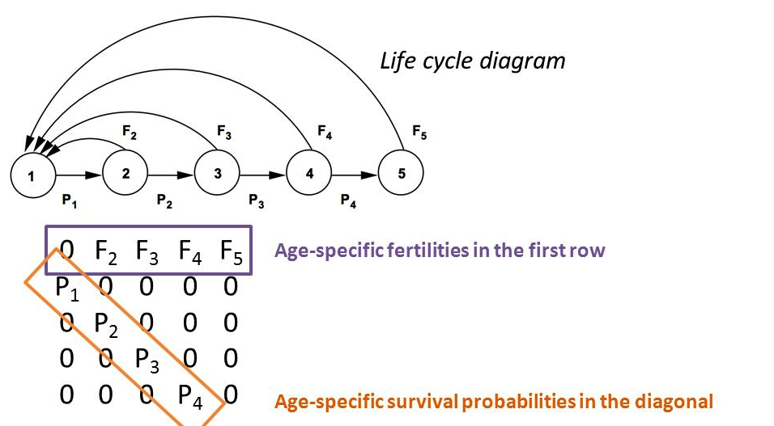
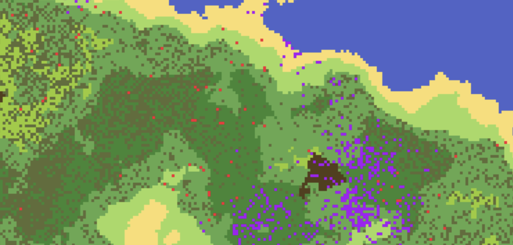
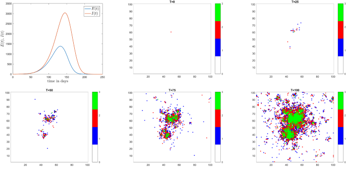
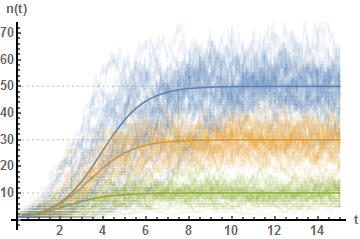
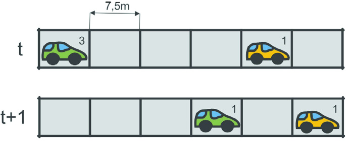

Lecturer & Contact
Václav Petrák
📞 +420 725 878 390
🏢 Office B724
🕒 Consultations: Upon request
Course Modules & Schedule
Discrete Dynamics
Introduction to modeling and simulation as a scientific tool. We explore simple iterative maps and population growth from exponential Malthusian growth to density-dependent logistic dynamics and age-structured Leslie matrices. Emphasis on translating biological assumptions into difference equations.
Lecture 1 Slides PDF- Section 1: Fibonacci Sequence
- Section 2: Malthusian Growth
- Section 3: Logistic Growth Models
- Section 4: Leslie Matrix Model
- Supplementary data: Population Models in Excel
We will introduce topics for the final project and project requirements.
System Dynamics
Interacting populations and the feedback loops that govern them. We derive the Lotka-Volterra predator-prey equations from first principles and analyze their behavior through phase-plane portraits and numerical integration. Includes a side-by-side comparison with an agent-based implementation.
Lecture 2 Slides PDFEpidemiology & Agents
Two complementary paradigms for epidemic modeling. We construct both an equation-based compartmental SIR model and an agent-based simulation, then compare their predictions and discuss when each approach is appropriate. Central theme: same phenomenon, different levels of abstraction.
Lecture 3 Slides PDF- Section 1: Equation-Based SIR Model
- Section 2: Agent-Based SIR Model
- Section 3: Comparative Analysis
DUE: Finalize project proposals and initial Python class structure.
Cellular Automata
Discrete spatial models where simple local rules generate surprising global complexity. We implement Conway's Game of Life, the Drossel-Schwabl forest fire model, and Wolfram's elementary CA, exploring how structure and pattern emerge from minimal rule sets.
Lecture 4 Slides PDF- Section 1: Conway's Game of Life
- Section 2: Forest Fire Model
- Section 3: Elementary Cellular Automata
Review project implementation progress. Discuss modelling challenges.
Chaos & Fractals
Deterministic systems that are practically unpredictable. We investigate the logistic map's route to chaos through bifurcation diagrams, visualize the strange Lorenz attractor, and explore self-similar fractal geometry via the Mandelbrot and Julia sets.
Lecture 5 Slides PDFSynthesis: Choosing, Validating & Communicating Models
A capstone review of the modeling toolkit assembled across the course. We survey a formal model taxonomy, practice validation and sensitivity analysis on existing models, and discuss strategies for communicating simulation results clearly, honestly, and convincingly.
Lecture 6 Slides PDF- Model Taxonomy & Decision Framework
- Validation, Sensitivity & Common Pitfalls
- Communicating Results & Project Preparation
DUE: Final project report, code, and presentation.
Grading
There is no exam. Your grade is based entirely on three independent outputs.
Journal Club Presentation
A 10 to 15-minute presentation of a research paper followed by Q&A. The paper you present is usually related to your project, but it is not a strict requirement.
- Design: Well-organized and easy to follow.
- Timing: Adherence to the 10 to 15-minute format.
- Delivery: Clear and confident speech with appropriate pacing.
- Questions: Convincing response to audience questions.
- Introduction: High-level overview of the motivation and research question: You have explained what the researchers did and why
- Methods: Explanation of the experimental approach; unfamiliar methods explained without excessive detail:
- Results: Key results from the paper clearly explained: You focused on essential and most relevant results.
- Critical Evaluation: Critique of methods, ideas for improvement, and significance of the findings: You have added some value by your presentation.
- Guide to Effective Presentation Design You should stick to conventional IMRaD format of the presentation. The guide may help with visual design. It is a suggestion only, there is no need to implement any advice. .
Capstone Poster Presentation
A 5-minute presentation of your independent simulation project, including a 5-minute poster walk-through and Q&A.
Poster will be in A1 format
- Design: Well-organized and easy to follow.
- Plots: Clear graphical presentation of simulation results that address poster objectives and show model behavior.
- Delivery: Clear and confident speech with appropriate pacing.
- Questions: Convincing response to audience questions.
- Correctness: Correct functionality of fundamental models.
- Understanding: Demonstrated understanding of core concepts.
- Extension: Successful and meaningful implementation of additional features (if applicable).
- Discussion: Insightful discussion on how parameters and initial conditions affect outcomes; identification and explanation of behaviors.
- Guide to Making a Scientific Poster. You should use layout, design elements, and information density according to your needs.
Project Review Discussion
An interactive session where you walk through your capstone project, explaining the methodology, design choices, and results. The primary goal is to demonstrate your understanding of the modeled system, not just the code.
- Clean, well-formatted, and easy-to-follow code.
- Consistent naming conventions and style.
- Logical organization: functions that break code into manageable components where necessary.
- Sufficient and meaningful comments for complex or non-obvious code.
- Ability to explain the modeled system: what it represents, what assumptions were made, and why.
- Ability to interpret simulation results in terms of real-world behavior of the system.
- Ability to explain how model parameters and initial conditions influence outcomes.
- Ability to suggest meaningful extensions, alternative approaches, or improvements to the model.
Capstone Project Themes
Students will select one of the following domains for their capstone simulation project. Project proposals are due by Mar 24.

Technological Diffusion Analysis
Modeling the spread of innovation using the logistic growth and Bass diffusion models.

Allee Effect Modeling
Exploring population dynamics through the logistic growth model with the Allee effect.

Epidemic Systems Modeling
Exploring COVID-19 transmission dynamics using compartmental models and differential equations.

Granular Materials Simulation
Simulating granular flow and particle interactions using cellular automata.

Forest Fire Simulation
Modeling fire spread dynamics using cellular automata and environmental parameters.

Procedural Level Generation
Creating diverse and engaging game environments through cellular automata and simple rule-based systems.

Population Dynamics Analysis
Modeling age-structured population changes using the Leslie matrix.

Agent-Based Epidemic Modeling
Simulating disease dynamics using agent-based SIR models.

Predator-Prey Agent-Based Simulation
Exploring population dynamics through individual agent behaviors and interactions.

Diffusion-Limited Aggregation
Simulating diffusion-limited aggregation and natural cluster growth.

Epidemic Spread Modeling
Simulating disease propagation using cellular automata and spatial dynamics.

Malthusian Population Growth Analysis
Evaluating the adherence of country populations to the Malthusian exponential growth model.

Predator-Prey Disease Dynamics
Investigating the effects of disease transmission on ecological population stability using mathematical models.

Stochastic Population Modeling
Enhancing the classic logistic growth model by incorporating environmental randomness.

Nagel-Schreckenberg Traffic Simulation
Exploring traffic dynamics and emergent patterns using cellular automata.